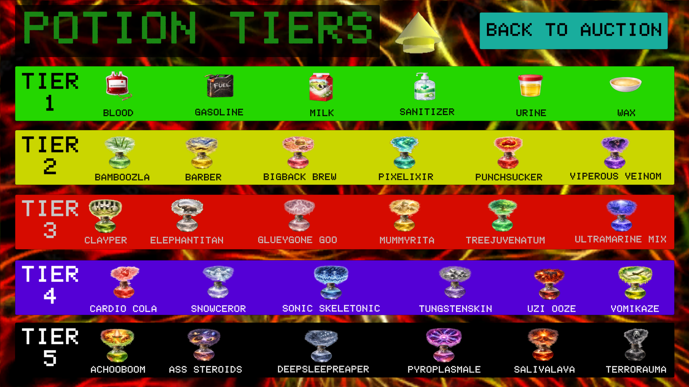
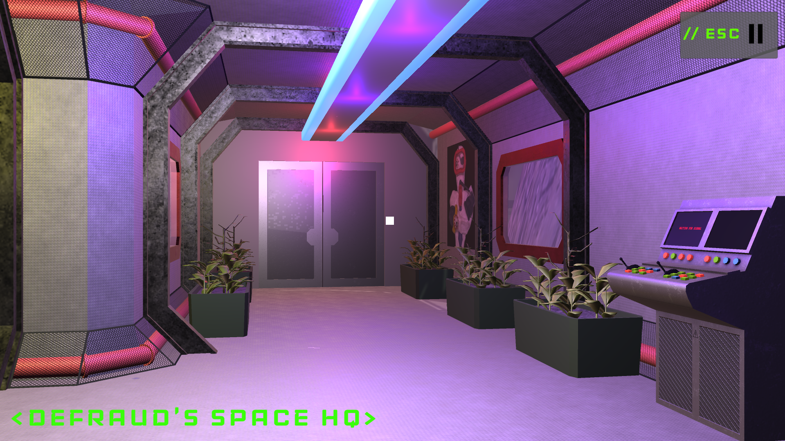
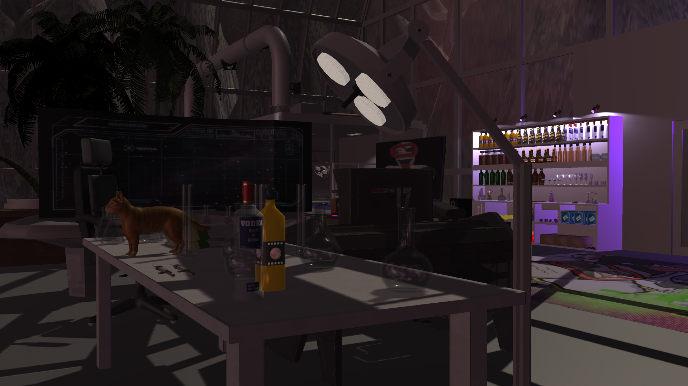
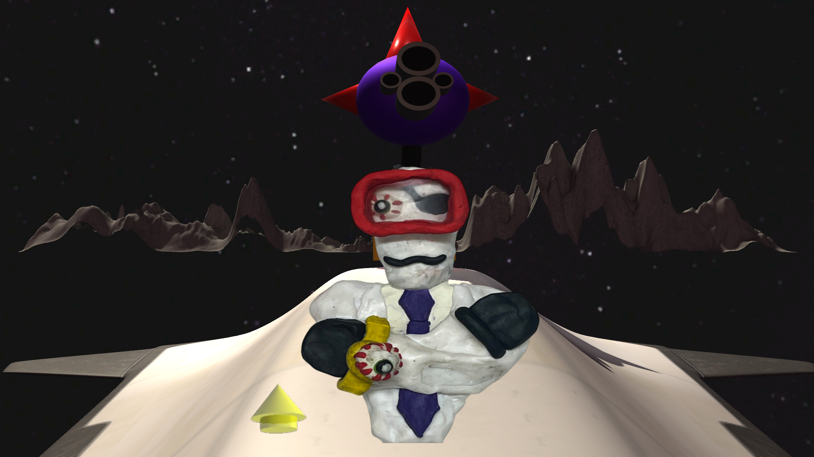
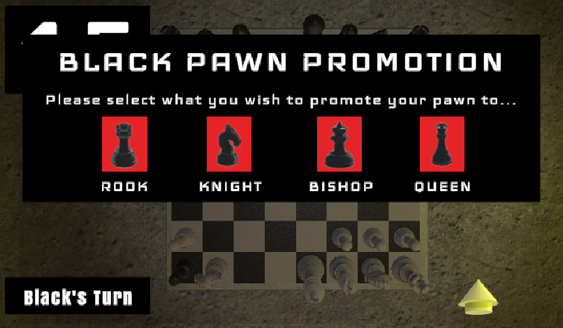

Unity • 3D Exploration / Strategy / Game of Chance / RPG
The Alchemist Auction
Dr. Fleece deFraud is back for revenge in this expanded sequel of The Assassin Auction! Explore interactive environments, test your cognitive skills in brain-teasing bonus games, strategically bid for world-famous potions, and even fight in an RPG boss battle in this astronomically wild adventure!

About the Project
The Alchemist Auction is the sequel to The Assassin Auction, expanding upon its original bidding
mechanics with a much larger collection of interconnected gameplay systems. Fleece deFraud is back and
hungry for revenge! Now residing in deep space, he challenges the player to his newest bidding game,
"The Alchemist Auction," where they compete to purchase some of the universe's most revolutionary
potions. With randomized auction outcomes, potion selections, and events, each playthrough presents a
different strategic challenge.
In addition to the classic auction gameplay, the project introduces a new RPG-style boss battle,
multiple interactive 3D areas to explore, and four bonus games hosted by deFraud's colleague, Dr.
Liquothol. Can the player once again successfully outwit and outplay the brilliant, now PhD-holding, Dr.
deFraud at his own game?
Content Notice: This game contains offensive language, alcoholic references,
flashing lights, and jumpscares!
Team: Dylan Abry (Lead Designer and Developer), Srushti Basapuri (Artist)
Gameplay & Media
The Alchemist Auction Trailer
A trailer of The Alchemist Auction that I made for the game prior to its release on itch.io!
"Defraud's Dome" Gameplay
Gameplay of "Defraud's Dome" level from The Alchemist Auction. Features the bidding process for potions, a bonus game, and usage of the Pilfer Pass from Dr. deFraud!
"Fleece's Final Face-off" Gameplay
Gameplay of "Fleece's Final Face-off" level from The Alchemist Auction. Features the potion purchase mechanic and the turn-based battle structure of taking move turns with Fleece deFraud. Also includes a quiz question that rewards the player more money if answered correctly.
"Completionist Cave" Gameplay
Footage of the Completionist Cave. This is the area that the player unlocks in The Alchemist Auction when "Defraud's Dome" and "Fleece's Final Face-off" are completed. Features "One Percent Present" minigame and a working TV!

Potion Tiers Page
The Alchemist Auction contains 30 potion items potentially up for bid! Tier 2 to 5 potions were all created by myself, and selecting a potion will reveal the lore behind it! OpenAI was used to generate the potion images and I kept providing image feedback until they matched my vision for them.

Level Selection
The halls of deFraud's Space HQ serve as the game's level selection hub. Players simply approach the doors of the level they wish to visit (a level preview will be displayed when close enough to the doors) and click on the doors to enter.

Dr. deFraud's Office
Before the Dr. deFraud boss fight, the player can explore deFraud's office that contains game easter eggs, along with some of his personal interests. When the player enters a red trigger space behind deFraud's desk, a randomly timed jumpscare will fire off, officially starting the battle.

The 8-Bit Destructionatron
Dr. deFraud's deadly weapon, the 8-Bit Destructionatron, that he reveals during the fight, is a 3D object I built using Unity's ProBuilder package. The machine's pixelated effect animations were made using Piskell.

Completionist Cave Chessboard
Image of chess gameplay from the Completionist Cave. All rules are coded in the chess game, including pawn promotion, stalemate, en passant, and castling. Previously, I had to code a chess game in Java for my Software Methodology class at Rutgers, so I took the logic I used from that project to code the chess game in The Alchemist Auction.
What I Built
- Randomized Bid Probability System: Dr. deFraud uses a probability-based bidding system that determines how aggressively he competes for each potion. Each round, his maximum bid is randomized based on the potion's starting value and his available funds, while the player receives a probability guide rather than knowing his exact limit. The system uses escalating bid thresholds with decreasing probabilities of continuing to bid, making deFraud increasingly cautious as prices rise. Because he knows when the auction will end, his behavior also changes strategically during the final round, where he is willing to spend all of his remaining money.
- Dr. deFraud Decision-Making AI: Dr. deFraud uses rule-based, state-dependent decision logic to evaluate his inventory and choose advantageous actions. His potion-mixing logic searches his available items for combinations and prioritizes the pairing that produces the strongest replica. His trade-in logic evaluates potion tier and monetary value, prioritizing the most valuable potion among his lowest-tier items. Because these decisions are calculated from his current inventory, deFraud's behavior can change dynamically from one playthrough to another.
- Dynamic Auction / Game-State System: Each auction lasts a randomized 10–15 rounds, with only a selection of the game's 30 potions appearing for bid during each playthrough. Throughout the auction, additional mechanics—including Dr. deFraud's two Pilfer Passes, surprise bonus games, potion mixing, and trade-ins—dynamically alter player inventories, available funds, and strategic opportunities. The combination of randomized content and interconnected game systems ensures that no two auctions play out exactly the same way.
- Randomized Bonus Game Systems: Bonus games use randomized game-state generation to prevent identical playthroughs. Fisher-Yates shuffling is used for shuffling cards in Matcher and puzzle pieces in Slider. Game-specific validation ensures that despite random shuffling and generation of objects, challenges remain beatable for the player.
- Potion Mixing & Inventory System: Each potion is represented by a custom C# class that stores properties such as its name and tier value. Potion recipes are managed through a Dictionary, where pairs of ingredient potions are mapped to their resulting potion replica. When the player or Dr. deFraud attempts to mix two potions, the system checks whether the selected combination matches a valid recipe and, if successful, awards a replica with a tier value one level higher than the combined ingredients. Player and opponent inventories are maintained using List collections that update dynamically throughout the auction. Purchasing, pilfering, trading in, and mixing potions can add, remove, or replace inventory data, allowing multiple gameplay systems to operate from the same continuously changing game state.
- Multi-Phase RPG Battle System: The game's finale transitions the player into a turn-based RPG boss battle against Dr. deFraud, who has 6,000 HP compared to the player's 600 HP. Each turn, the player can use potions with different offensive, healing, and defensive effects, while Dr. deFraud responds through his own attack phase. Defensive actions can reduce incoming damage and create opportunities to counterattack, while cooldowns and status effects influence the player's available strategies. The battle also incorporates the game's economy through opportunities to earn additional funds from quiz questions and purchase resources when needed. As Dr. deFraud approaches defeat, the battle progresses through additional states and phases, including the arrival of Fleece deFraud as a 4,000-HP secondary opponent. State-based logic controls transitions between combat, defensive phases, narrative sequences, and the final Destructionatron challenge, where the traditional turn-based battle is replaced by a timed input sequence that determines the game's final outcome.
- Persistent Progression & Completionist Cave: Player accomplishments are tracked beyond individual auction sessions through a persistent progression system that records completed challenges and unlocked content. These achievements contribute toward the Completionist Cave, a reward area containing additional interactive content and opportunities to revisit features from the main game. The Cave includes replayable bonus games, a functioning television (that plays animations made by me!), and additional activities such as One Percent Present and multiplayer chess, giving players incentives to explore and complete content beyond the primary auction.
- Rule-Based Chess System: The Completionist Cave features a fully playable chess minigame programmed around the rules and state of an active match. Each piece contains movement logic that determines its valid moves, while the game tracks board state and whose turn is currently active to prevent illegal actions. The system also handles special rule conditions including castling, pawn promotion, and en passant, requiring additional state tracking based on previous moves and the current positions of pieces. The system evaluates king safety to prevent illegal moves and determine check and checkmate conditions. A chess clock independently tracks each player's remaining time and switches between players as turns change, adding another state-dependent system that must remain synchronized with the match.
Technical Challenges
- Dr. deFraud's Potion-Mixing Logic: Designing Dr. deFraud's potion-mixing behavior required the CPU to evaluate its inventory rather than select ingredients randomly. The system searches the CPU's available potions for valid ingredient combinations, determines the resulting replica potion, and prioritizes the strongest available result. This required coordinating the potion recipe data with Dr. deFraud's inventory and decision-making logic while ensuring consumed ingredients were correctly removed and the newly created potion was added back into his inventory.
- Boss Battle Phase Transitions: The final boss battle contains multiple combat phases and gameplay states that must transition without allowing logic from the previous phase to continue executing. The battle tracks player health, Dr. deFraud's health, Fleece deFraud's health, defensive states, counters, cooldowns, potion effects, and available resources. Phase transitions required updating the active combat state, UI, available actions, and enemy behavior at the correct time, eventually transitioning into the final Destructionatron sequence that determines the battle's outcome.
- Management of Randomized but Valid Gameplay: Randomization is used throughout the game to make each playthrough different, including auction length, potion availability, special events, and bonus-game configurations. The challenge was ensuring randomized results still produced valid and completable gameplay states. For example, bonus games such as Matcher and Slider use shuffled configurations, but additional rules and validation are used so random generation does not create an invalid or unsolvable challenge. This allowed the game to remain unpredictable without sacrificing gameplay integrity.
- Auction Interconnected Gameplay System Edge Cases: Because bidding, inventories, Pilfer Passes, trade-ins, potion mixing, and currency all modify shared game state, unusual sequences of actions could expose edge cases between otherwise functional systems. One discovered case allowed a potion to be selected for a trade-in before being stolen by Dr. deFraud with a Pilfer Pass. The trade-in system retained a stale reference to the now-missing potion, allowing the transaction to be repeatedly confirmed and generating unlimited currency while also breaking parts of the trade-in UI. Identifying this interaction demonstrated the need to revalidate inventory ownership when a transaction is executed rather than assuming that the game state present during selection is still valid at confirmation.